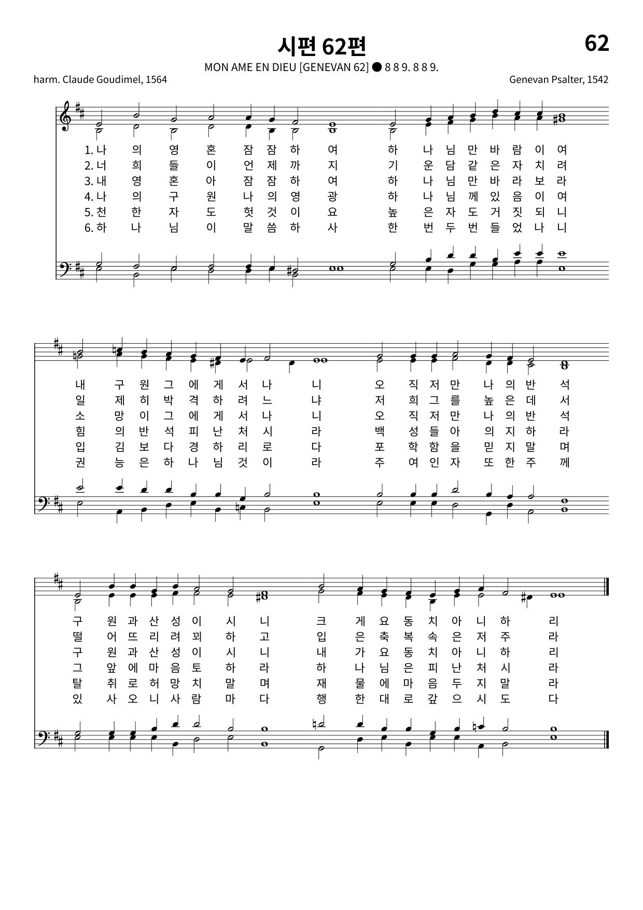

Psalm 62
MON AME EN DIEU [GENEVAN 62] · 8 8 9. 8 8 9.
English title: In God Alone My Soul Finds Rest
Tune: Genevan Psalter, 1542 · Harmony: Claude Goudimel, 1564 · Lyrics: Korean adaptation of Psalm 62 from the Korean Revised Version (AI draft adaptation · not yet theologically reviewed) · 6 stanzas
Score PDF MusicXML (for printing) MusicXML (for accompaniment, with prelude and repeats) Read Psalm 62 (Korean Revised Version)
Score
← Psalm 61 ListAccompaniment (in preparation)Psalm 63 →
Lyrics (Korean)
Stanza 1 (Ps. 1~2)
나의 영혼 잠잠하여
하나님만 바람이여
내 구원 그에게서 나니
오직 저만 나의 반석
구원과 산성이시니
크게 요동치 아니하리
나의 영혼 잠잠하여
하나님만 바람이여
내 구원 그에게서 나니
오직 저만 나의 반석
구원과 산성이시니
크게 요동치 아니하리
Stanza 2 (Ps. 3~4)
너희들이 언제까지
기운 담 같은 자 치려
일제히 박격하려느냐
저희 그를 높은 데서
떨어뜨리려 꾀하고
입은 축복 속은 저주라
너희들이 언제까지
기운 담 같은 자 치려
일제히 박격하려느냐
저희 그를 높은 데서
떨어뜨리려 꾀하고
입은 축복 속은 저주라
Stanza 3 (Ps. 5~6)
내 영혼아 잠잠하여
하나님만 바라보라
소망이 그에게서 나니
오직 저만 나의 반석
구원과 산성이시니
내가 요동치 아니하리
내 영혼아 잠잠하여
하나님만 바라보라
소망이 그에게서 나니
오직 저만 나의 반석
구원과 산성이시니
내가 요동치 아니하리
Stanza 4 (Ps. 7~8)
나의 구원 나의 영광
하나님께 있음이여
힘의 반석 피난처시라
백성들아 의지하라
그 앞에 마음 토하라
하나님은 피난처시라
나의 구원 나의 영광
하나님께 있음이여
힘의 반석 피난처시라
백성들아 의지하라
그 앞에 마음 토하라
하나님은 피난처시라
Stanza 5 (Ps. 9~10)
천한 자도 헛것이요
높은 자도 거짓되니
입김보다 경하리로다
포학함을 믿지 말며
탈취로 허망치 말며
재물에 마음 두지 말라
천한 자도 헛것이요
높은 자도 거짓되니
입김보다 경하리로다
포학함을 믿지 말며
탈취로 허망치 말며
재물에 마음 두지 말라
Stanza 6 (Ps. 11~12)
하나님이 말씀하사
한 번 두 번 들었나니
권능은 하나님 것이라
주여 인자 또한 주께
있사오니 사람마다
행한 대로 갚으시도다
하나님이 말씀하사
한 번 두 번 들었나니
권능은 하나님 것이라
주여 인자 또한 주께
있사오니 사람마다
행한 대로 갚으시도다